Rétrospective
L'arrivée dans les locaux (9h)
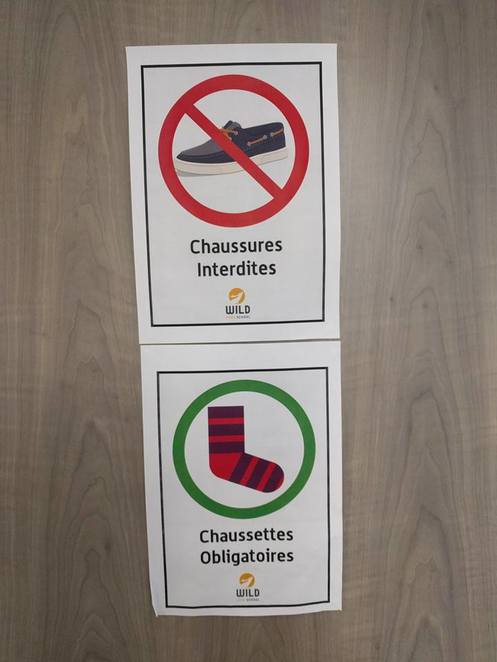
Le rendez-vous était donné à 9 heures au 28 rue Cérès à Reims. Les futurs développeurs de la promotion sont arrivés au compte-gouttes. Au nombre de quatorze, tous étaient impatients à l'idée de démarrer une nouvelle aventure: la quête pour devenir développeur !
L'art de briser la glace à la Wild (9h15 - 10h30)
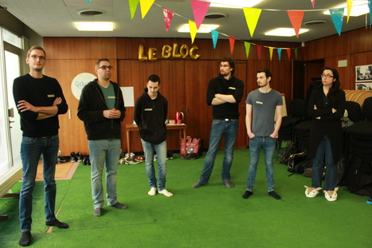
Sitôt arrivés, le campus manager et notre formateur nous ont mis dans le bain avec un petit jeu pour se découvrir. Sur une feuille, nous devions présenter des anecdotes à notre sujet. Les feuilles sont mélangées, et chaque Wilder devait retrouver le propriétaire de la feuille qu'il a récupéré dans le tas. Après avoir fait connaissance (par duo/trio ou plus), chacun devait présenter son voisin à partir des informations sur la feuille et celles données oralement par celui-ci.
Des objets pour les lier (10h30 - 12h)
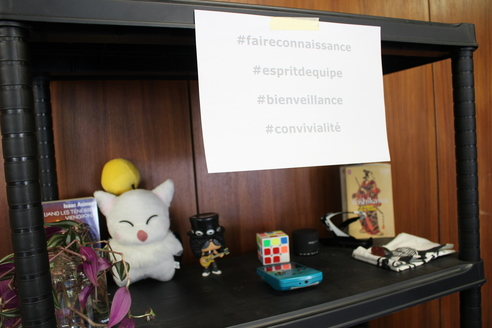
Lors de la préparation de la journée d'intégration, il nous a été demandé d'apporter un objet (de préférence pas trop encombrant) qui nous représentait. Nos objets seront laissés sur une étagère près de l'entrée. Ci-dessous, tous les objets amenés par chacun et chacune.
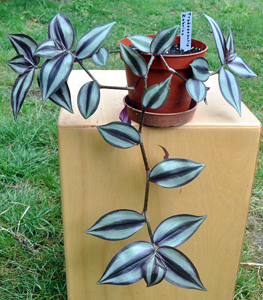
L'objet d'Aurélie
Le tradescantia est une plante riche et dense
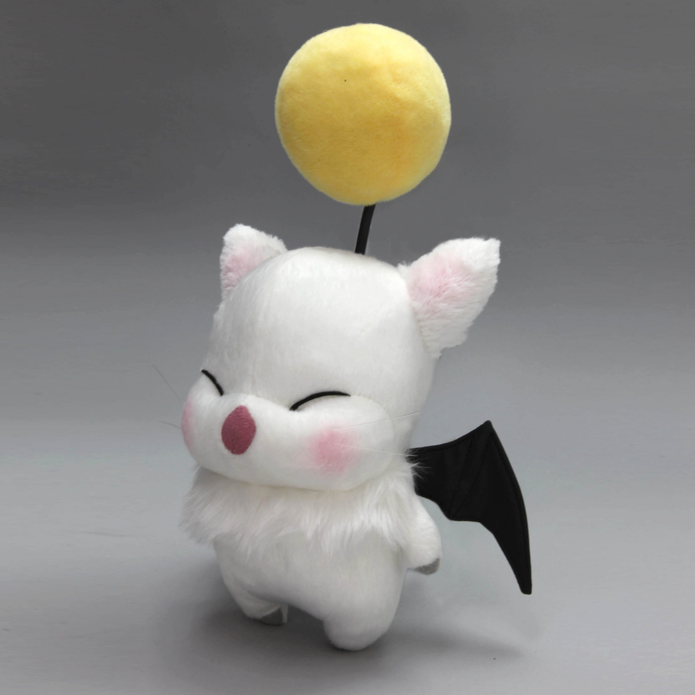
L'objet d'Anahita
Une peluche toute douce représentant un personnage de l'univers du jeu de rôle Final Fantasy.
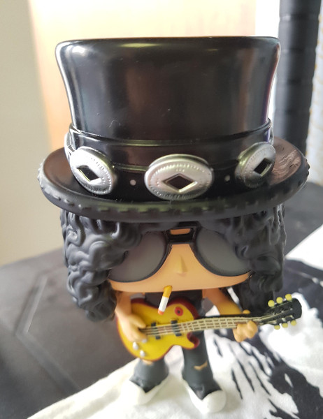
L'objet d'Anthony
Petite figurine représentant Slash, le guitariste du groupe Guns N' Roses.
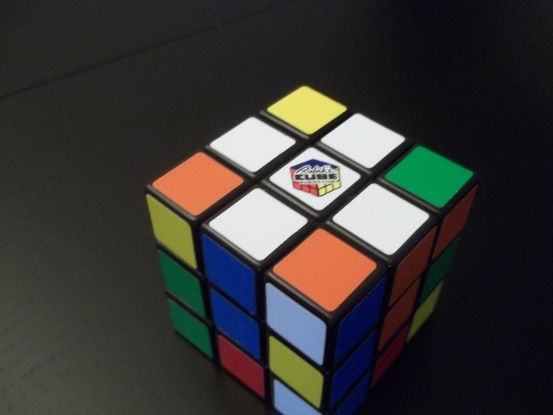
L'objet de Maxence
Un Rubik's cube. Son propriétaire est capable d'en terminer un en moins d'une minute !
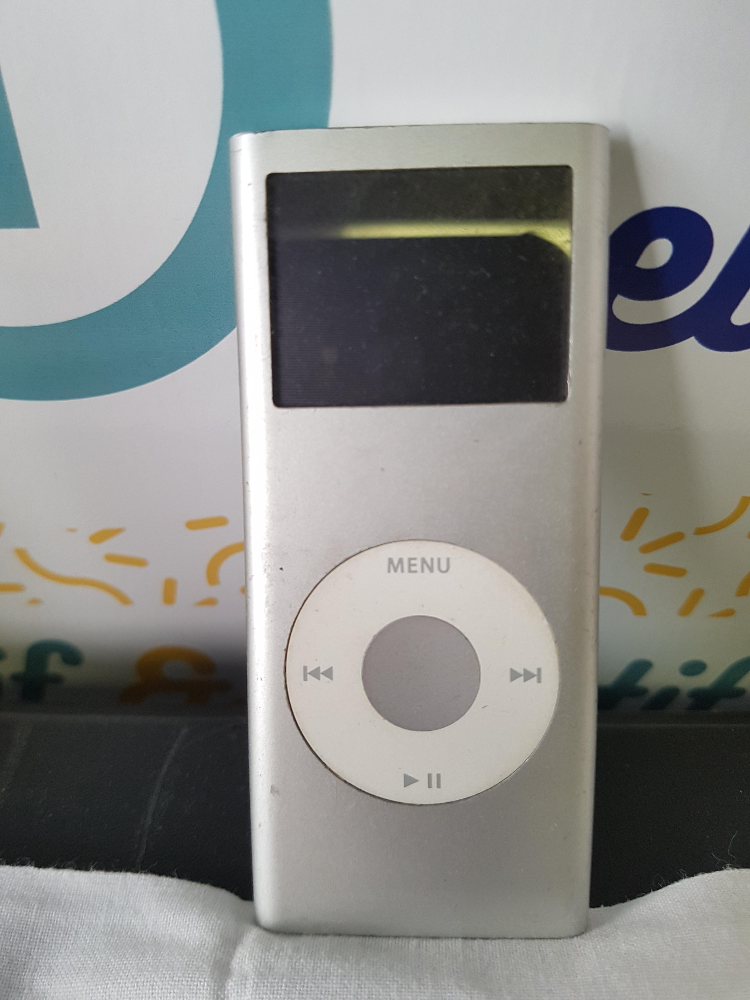
L'objet de Thibaud
Un baladeur MP3 qui confirme les goûts musicaux de son détenteur.
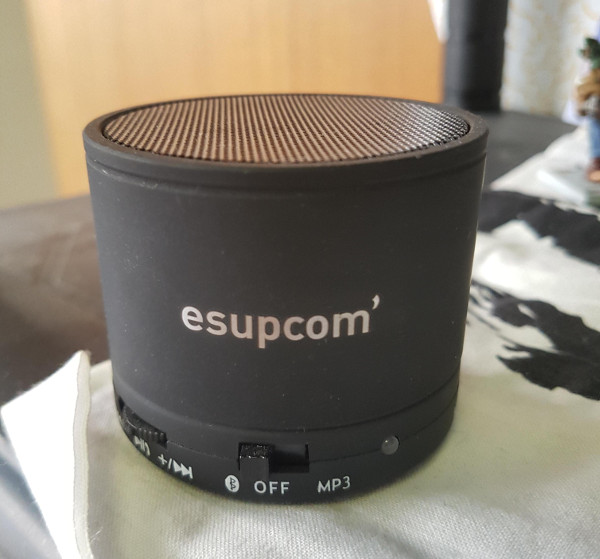
L'objet de Tanguy
Une enceinte.
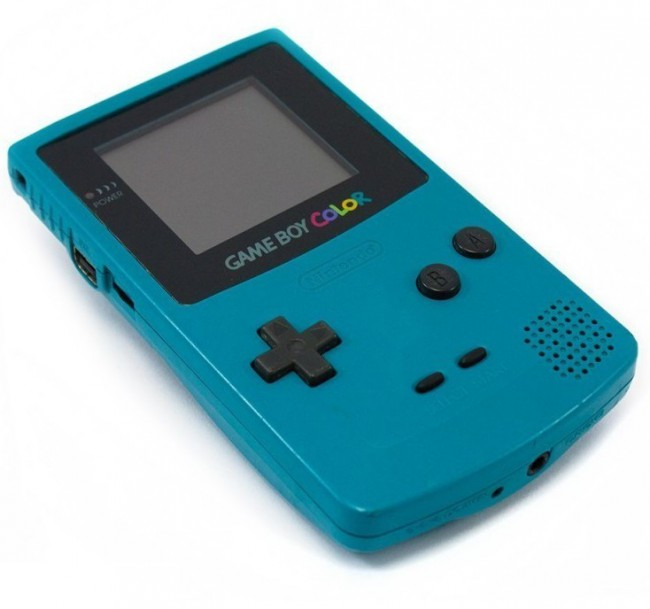
L'objet de Florian
Il est tombé dans la marmite des jeux vidéo depuis son plus jeune âge ! Sa première console, qui ne marche malheureusement plus...

L'objet de Khalid
La Pierre et le Sabre de Yoshikawa. C'est l'œuvre la plus emblématique de la littérature traditionnelle japonaise.
L'objet de Philippe
Il est passionné par la science-fiction et les univers dystopiques. Quand les ténèbres viendront d'Isaac Asimov est clairement un de ses coups de cœur.
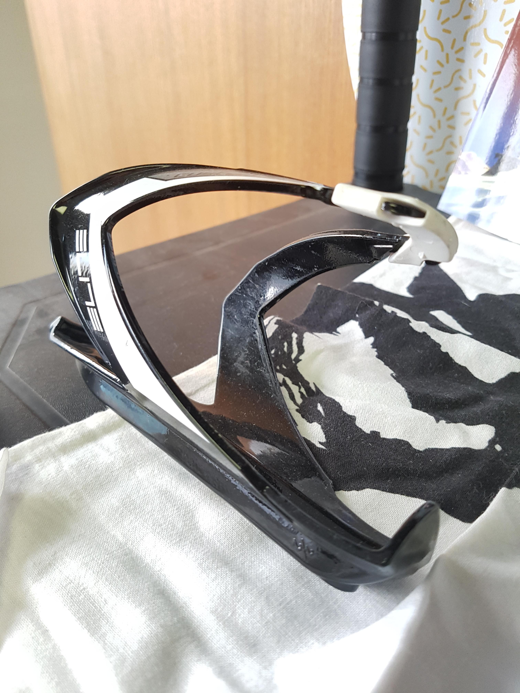
L'objet d'Arnaud G
Un porte-gourde utilisé pour le sport.
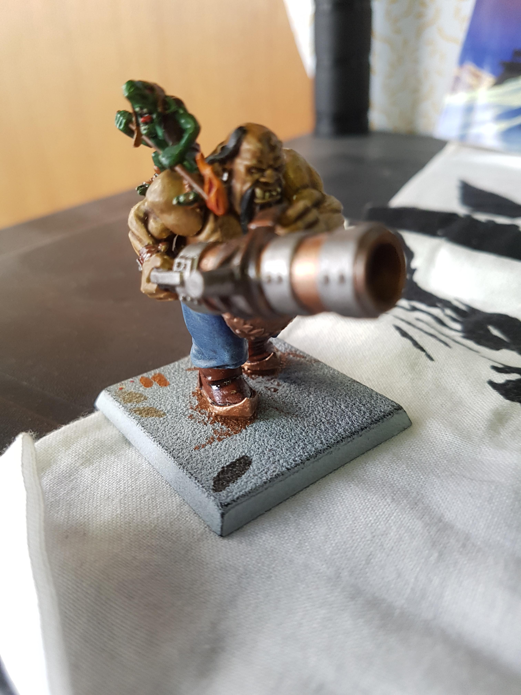
L'objet de Thomas
Une figurine du jeu de rôle Warhammer peinte à la main. Cela lui a pris énormément de temps.
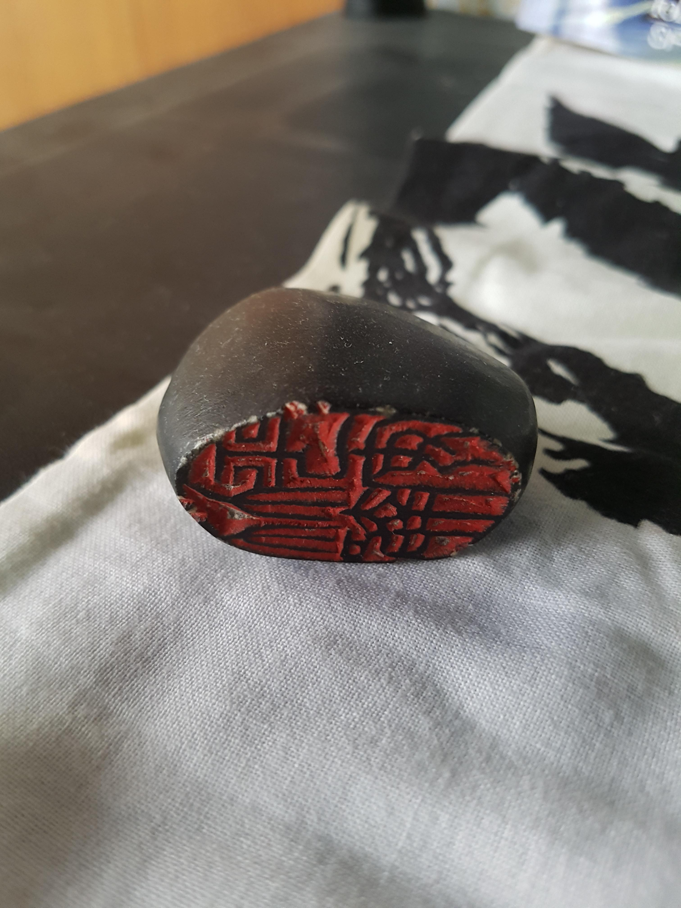
L'objet de Clément
Une pierre runique avec des inscriptions en mandarin sur le dessous.
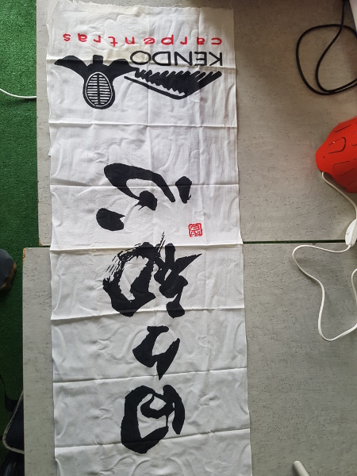
L'objet de Dorian
Cette sorte de bandana s'appelle un tenugui. Il est utilisé pour les arts martiaux japonais. Dorian a pratiqué le kendô durant quelques années.
L'objet d'Arnaud D
Un livre sur le bien-être intérieur.
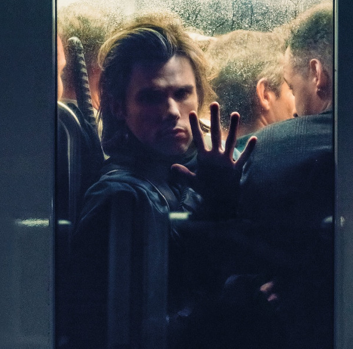
L'objet de Max
Des albums de musique. Max préfère le rap.
Notre première sortie (14h - 15h)
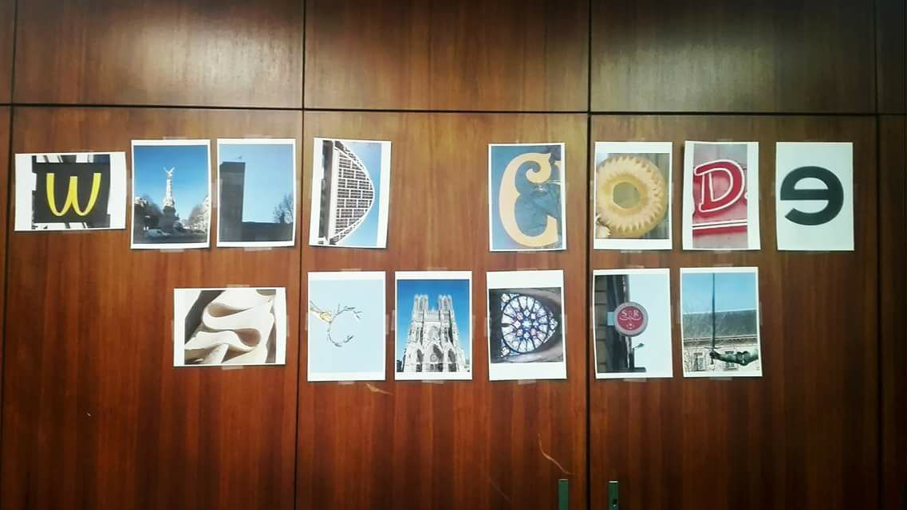
Pour la prochaine étape de la journée d'intégration, nous avons été scindés en trois groupes. Nous sommes partis en touristes dans Reims, dans le but de prendre en photo les lettres de "WILD CODE SCHOOL" (un groupe par mot). Cette mission a duré une heure et a permis de (faire) découvrir la ville de Reims à ceux qui n'y résidaient pas.
Le montage des meubles (15h - 16h)
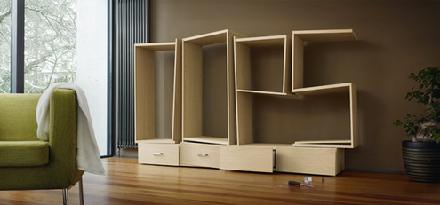
Après cette sortie, nous avons mis la main à la pâte et avons monté divers meubles. Après environ une heure de dur labeur, un bac à chaussures et des pare-vent sont désormais opérationnels ! Nous avons aussi réaménagé la salle de cours, en regroupant les tables deux par deux, permettant jusqu'à quatre d'entre nous de travailler convenablement à chaque coin de la salle.
L'arrivée des start-up : point d'orgue de la journée (16h - env. 19h)
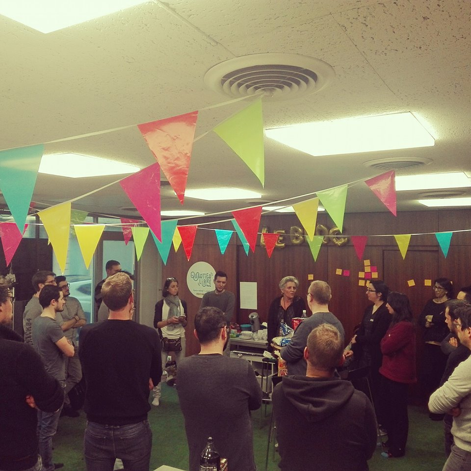
L'ouverture de l'école de Reims dans les locaux de Quartier Libre a attiré l'attention de nombreuses start-up rémoises en besoin de recrutement. Nous avons reçu, par exemple, le fondateur de Black Moon Lab, Monsieur Nicolas Gilet. Certains responsables de start-up ont prévu de repasser pendant la formation, pour nous présenter leur parcours et leurs attentes de recrutement.
Après avoir présenté les start-up, nous avons pu profiter d'un apéro organisé pour clôturer cette journée d'intégration. Certains d'entre nous ont été contraints de partir vers 18h pour des raisons organisationnelles ou personnelles. L'événement s'est terminé vers le début de soirée.